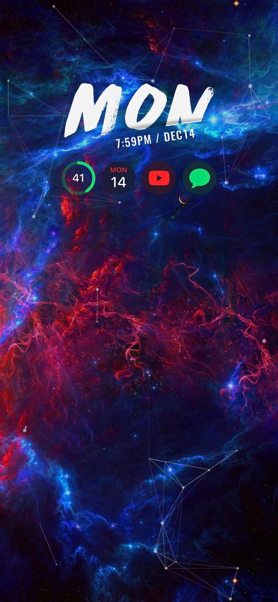
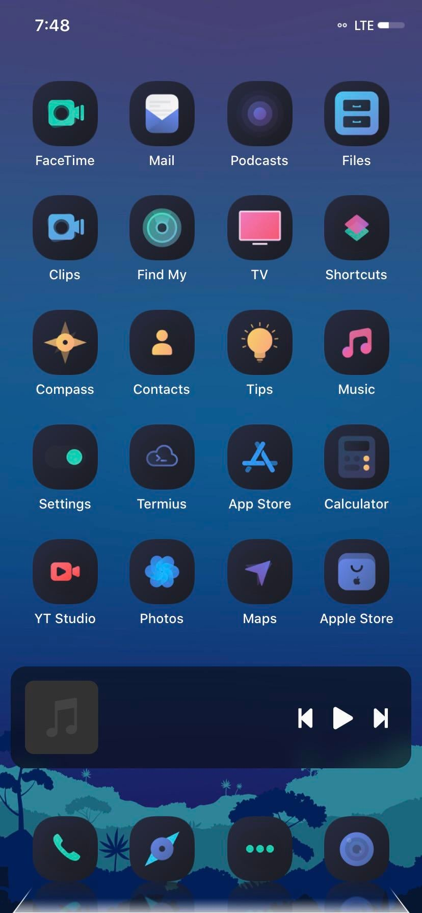
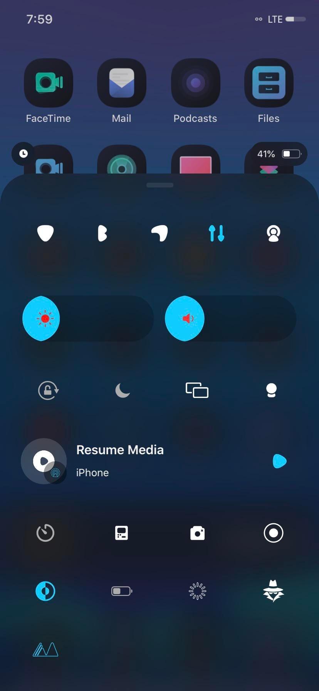
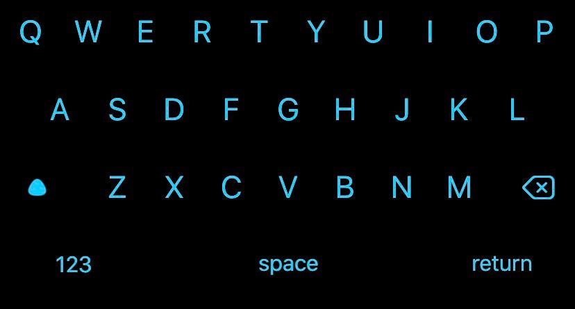
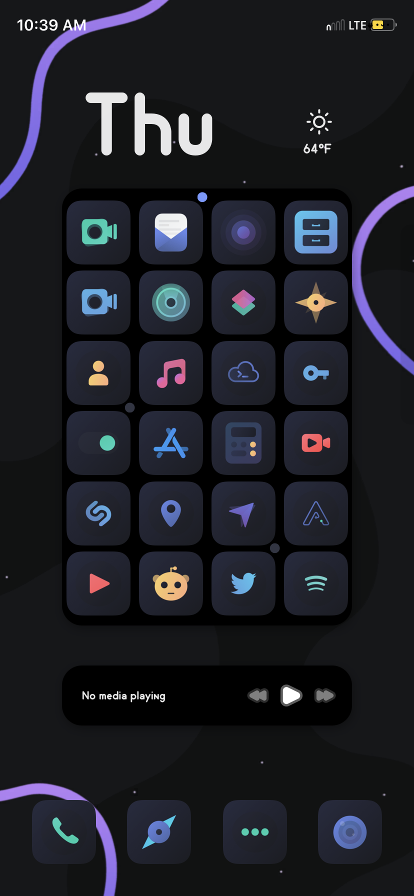
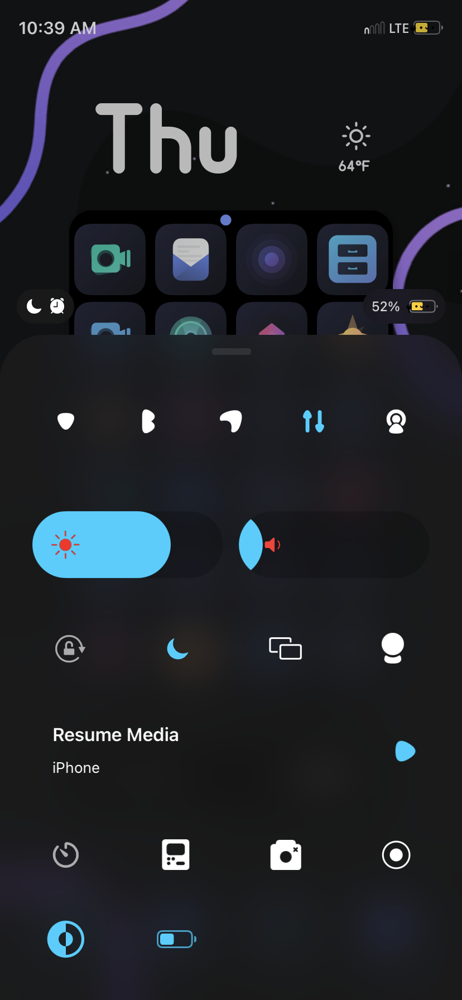
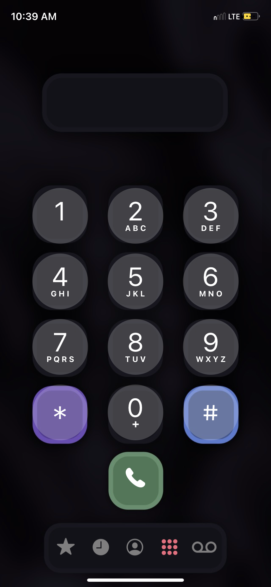

<html>
<head>
<title>AmericanTheRussian's IOS Themes</title>
<link href='../fonts.googleapis.com/cssdcab.css?family=Ubuntu:300' rel='stylesheet' type='text/css'>
<style type="text/css">
		body {
			background: #007180; /* Old browsers */
			background: -moz-linear-gradient(top,  #007180 0%, #cbddc8 100%); /* FF3.6+ */
			background: -webkit-gradient(linear, left top, left bottom, color-stop(0%,#007180), color-stop(100%,#cbddc8)); /* Chrome,Safari4+ */
			background: -webkit-linear-gradient(top,  #007180 0%,#cbddc8 100%); /* Chrome10+,Safari5.1+ */
			background: -o-linear-gradient(top,  #007180 0%,#cbddc8 100%); /* Opera 11.10+ */
			background: -ms-linear-gradient(top,  #007180 0%,#cbddc8 100%); /* IE10+ */
			background: linear-gradient(to bottom,  #007180 0%,#cbddc8 100%); /* W3C */
			filter: progid:DXImageTransform.Microsoft.gradient( startColorstr='#007180', endColorstr='#cbddc8',GradientType=0 ); /* IE6-9 */
			font-family: "Segoe UI Light", "Ubuntu", "Helvetica Neue Ultralight", "Calibri Light";
			/*text-shadow: 1px 1px rgba(0,0,0,0.5);*/
			color: white;
		}
		h1 {
			font-weight: normal;
		}
		h3 {
			font-weight: normal;
		}
		h4 {
			font-weight: normal;
		}
		a {
			text-decoration: none;
			color: rgb(64, 255, 64);
		}
		.bg-img {
			position: fixed;
			width: 100%;
			height: 100%;
			top:0px;
			left:0px;
			background-size: cover;
			background-repeat: no-repeat;
			background-position: 50% 50%;
			will-change: transform;
		}
		.blur {
			-webkit-filter: blur(5px);
			-moz-filter: blur(5px);
			-o-filter: blur(5px);
			-ms-filter: blur(5px);
			filter: blur(5px);
		}
		.overlay {
			background-color: rgba(0, 0, 0, 0.4);
		}
		.row {
			position: relative;
			width: 880px;
			height: 500px;
			margin: 0 auto;
			padding: 10px;
		}
		.project {
			position: absolute;
			background-color: rgba(255,255,255,0.25);
			backdrop-filter: blur(10px);
			-webkit-backdrop-filter: blur(10px);
			display: table;
			padding: 10px;
			border-radius: 5px;
			margin: 5px auto;
			width: 410px;
		}
		.button {
			padding: 5px;
			background-color: rgba(255,255,255,0.5);
			backdrop-filter: blur(5px);
			-webkit-backdrop-filter: blur(5px);
			color: black;
			border-radius: 5px;
			margin: 5px;
		}
		.button:hover {
			background-color: rgba(255,255,255,0.8);
		}
		.button a {
			color: black;
		}
		.project img {
			border-radius: 5px;
		}
		</style>
</head>

<!-- If your name is Oliver and you are reading this, stop you're stealing intellectual property -->

<body onload="getCookie()">
     <a href="../../home.html">
         
            </a>

    <script>
        function getCookie() {
                console.log("Test")
                var match = document.cookie.match(RegExp('(?:^|;\\s*)' + "captchapassed" + '=([^;]*)')); 
            console.log(match)
                if (match == null) {
                    alert("You have to complete the captcha again!")
                    window.location.replace("../index.html");
                }
            return match ? match[1] : null;
        }
    </script>
</body>
<H1> AmericanTheRussian's first theme! <a href="">Cyan World</a> </H1>





<H2> AmericanTheRussian's second (And current) theme! "Chiaroscuro" (Dark Portion Pictured below) </H2>



     


<!-- <H2> AmericanTheRussian's second (And current) theme! "Chiaroscuro" (Light Portion Pictured below) </H2>
<p> Hoping to fix low quality resolution pics below in the near future </p>
 


     
 --> 
</html>
